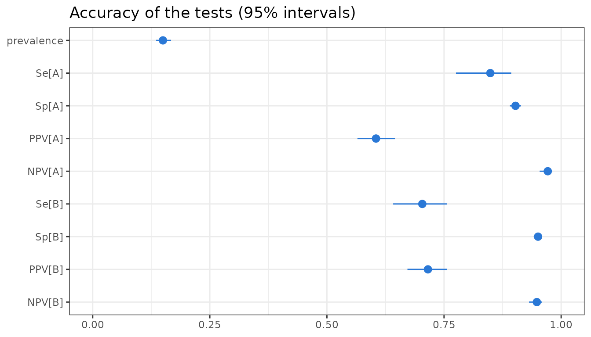
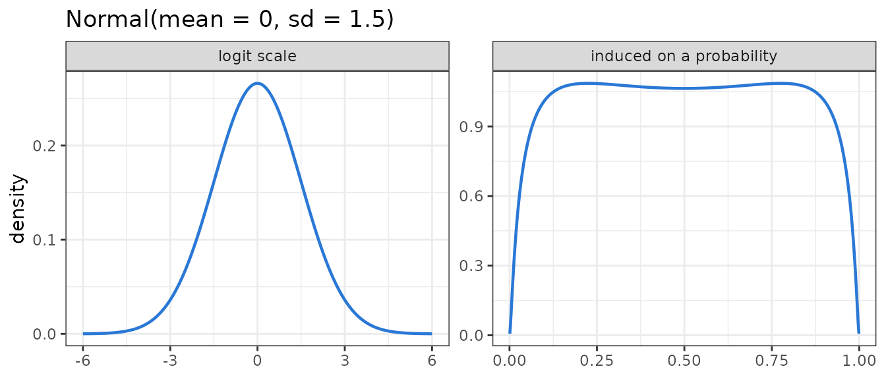
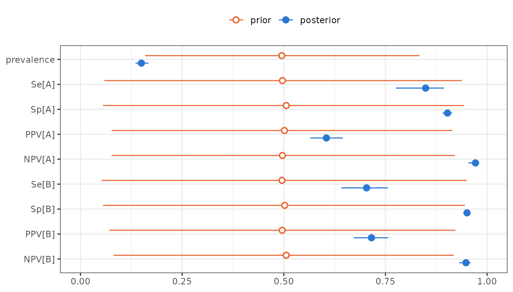
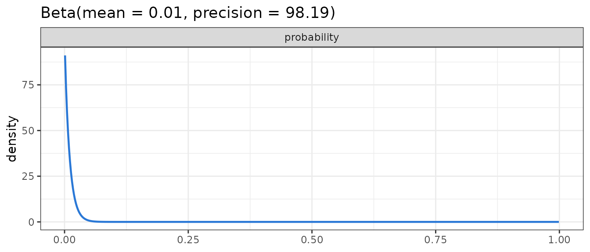
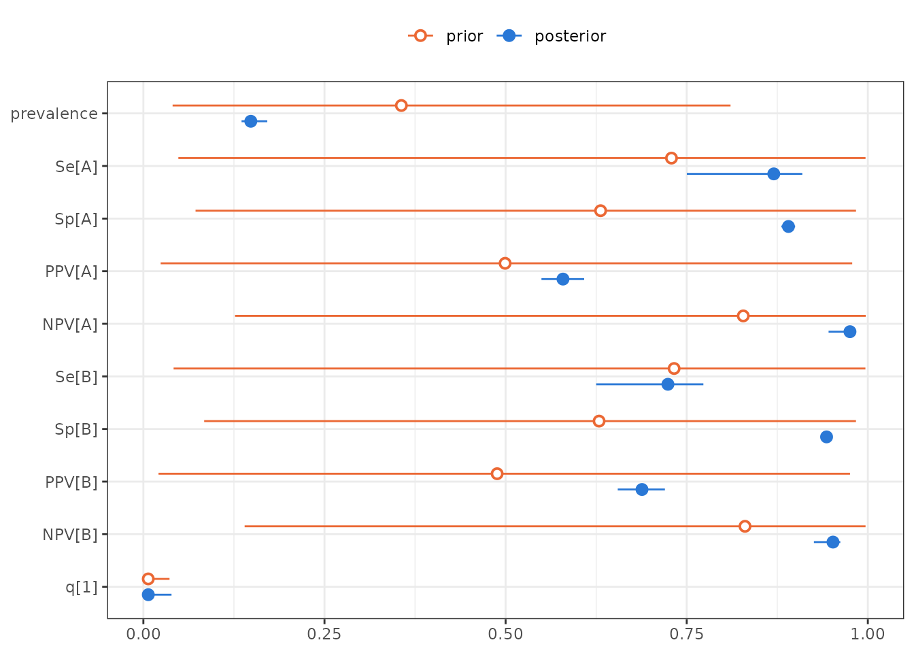
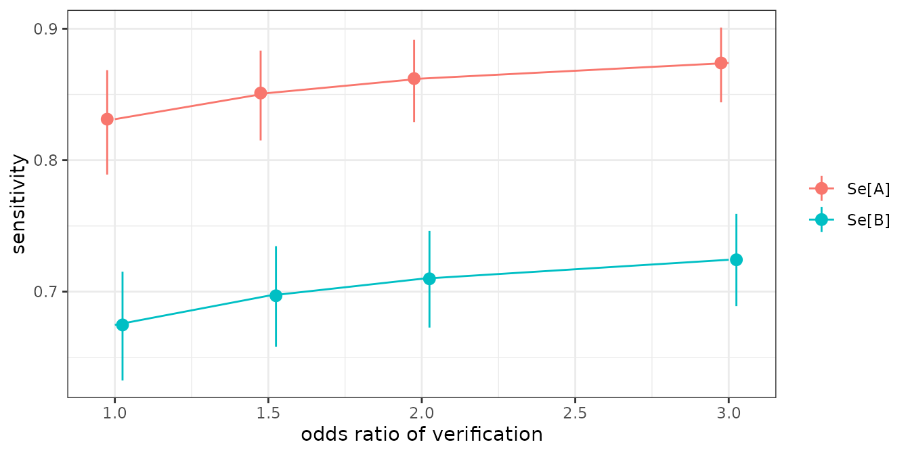
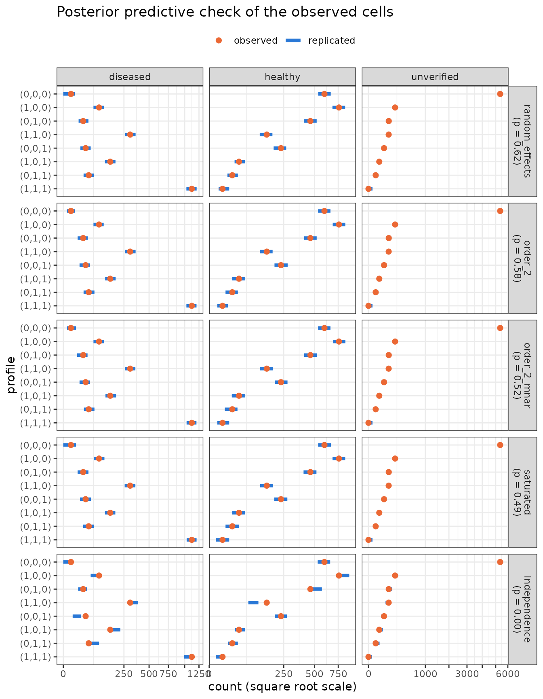

1. What the package does
In a diagnostic accuracy study, every subject receives one or more tests, and the reference standard—the definitive procedure establishing true disease status—should ideally be applied to all subjects. Because it is often invasive or expensive, only some are verified, usually more often those with positive tests. Because positive tests are over-represented among the verified, computing sensitivity (how often diseased subjects test positive) and specificity (how often healthy subjects test negative) from verified subjects alone distorts both estimates: this is verification bias (Begg and Greenes 1983; Zhou 1998).
baysesp corrects for verification bias when estimating sensitivity, specificity, and predictive values (disease or health probabilities given a test result) of binary tests and combined rules. It models all subjects—verified or not—in a Bayesian model (Martinez et al. 2006; Buzoianu and Kadane 2008) fitted with Stan (Carpenter et al. 2017), sampling parameters from their posterior distributions (combining priors with data). For every subject, you need all test results, verification status, and, if verified, disease status.
The shortest analysis takes three steps—preparing data, fitting the
model, and reading accuracy—as previewed below (not evaluated before
study exists):
library(baysesp)
d <- baysesp_data(data = study, tests = c("A", "B"), verified = "verified",
disease = "disease")
fit <- baysesp(data = d)
test_accuracy(fit = fit)After library(baysesp) loads baysesp,
baysesp_data() summarizes the data into d,
baysesp() fits the model using data = d to
produce fit, and test_accuracy() extracts
accuracy estimates from fit = fit.
The rest of the vignette explains each step, its choices, and how to read the results, following one simulated population through harder verification designs so each estimate can be compared with the truth:
- Section 2: preparing the data, and two questions before fitting;
- Sections 3 to 6: a study where every test combination has verified subjects: fitting, sampler checks, priors, combining and comparing tests;
- Section 7: combinations of results that are never verified;
- Section 8: verification that depends on the disease;
- Section 9: models assuming how the tests depend on each other;
- Section 10: comparing models;
First, we load baysesp for the walkthrough:
Loading baysesp prints nothing; next, Section 2 simulates our study and prepares the data.
2. Preparing the data
A simulated study
To see how baysesp performs when true accuracy is
known, we simulate a diagnostic study of n = 3000 subjects
with simulate_study(). In this population—used throughout
the vignette—15% (prevalence = 0.15) are diseased, and two
binary tests, A and B, have sensitivities 0.85
and 0.70 and specificities 0.90 and 0.95, with only some subjects
verified. After setting the seed, we simulate study and
inspect its first 6 rows with head(study):
set.seed(2026)
study <- simulate_study(
n = 3000,
prevalence = 0.15,
sensitivity = c(A = 0.85, B = 0.70),
specificity = c(A = 0.90, B = 0.95),
verification_prob = c(0.1, 0.8, 0.8, 1),
odds_ratio = 1,
dependence = independence()
)
head(study)
#> A B verified disease
#> 1 0 0 0 NA
#> 2 1 0 1 0
#> 3 0 0 0 NA
#> 4 0 0 1 0
#> 5 0 1 1 0
#> 6 0 0 0 NA-
n: number of subjects; -
prevalence: probability that a subject is diseased; -
sensitivity: sensitivity of each test (probability that a diseased subject tests positive); its names (A,B) name the test columns; -
specificity: specificity of each test (probability that a healthy subject tests negative); -
verification_prob: verification probability for each test-result combination in the order explained below: 0.1 when both tests are negative, 0.8 when one is positive, and 1 when both are positive; -
odds_ratio: ratio of verification odds between diseased and healthy subjects with the same test results; the default,odds_ratio = 1, means verification depends only on the test results (Section 8 uses another value); -
dependence: how tests depend on each other given disease status;dependence = independence()(default) assumes conditional independence, whiledependence = latent_dependence()anddependence = probit_dependence()allow dependence (Section 9).
In head(study), each row is one subject with test
results A and B (1 positive, 0 negative),
verified (1 yes, 0 no), and disease (1
diseased, 0 healthy). Rows 1, 3, and 6 are unverified
(verified is 0), so disease is
NA, while rows 2, 4, and 5 are verified healthy subjects
(disease is 0).
From individual data to profiles
Next, baysesp_data() validates the columns of
study and aggregates its individual rows into summary
counts stored in d:
d <- baysesp_data(
data = study,
tests = c("A", "B"),
verified = "verified",
disease = "disease",
counts = NULL
)
d
#> <baysesp_data> 2 tests, 4 profiles, 3000 subjects, 911 verified
#> never-verified profiles: none
#>
#> A B diseased healthy unverified
#> 0 0 1 210 1996
#> 1 0 92 194 66
#> 0 1 41 97 27
#> 1 1 267 9 0-
data: a data frame, by default with one row per subject; -
tests: column names for the test results, coded 0/1 or logical (1 positive); -
verified: column name indicating verification (1 verified, 0 not); -
disease: column name for disease status (1 diseased, 0 healthy,NAif unverified); -
counts: for aggregated data, the column name with subject counts; the default,counts = NULL, assumes one row per subject.
Printing d shows the header
2 tests, 4 profiles, 3000 subjects, 911 verified and
never-verified profiles: none, followed by the profile
table. Each row is a response profile—a combination of test
results—with counts of verified diseased, verified
healthy, and unverified subjects. With
K tests there are 2^K profiles, ordered with
all tests negative first and the first test changing fastest:
(0,0) (1 diseased, 210 healthy, 1996 unverified),
(1,0) (92, 194, 66), (0,1) (41, 97, 27), and
(1,1) (267, 9, 0). Every argument taking one value per
profile, such as verification_prob, follows this order.
The summary loses no information: the likelihood (probability of the observed data given the parameters) depends on the data only through these counts.
Aggregated data
Published studies usually report a table of counts rather than
individual rows. Instead of expanding them back into 3000 rows, enter
one row per combination of test results, verification, and disease
status with a count column, and pass its name to counts.
Below, we build published from the counts of
study and pass counts = "n" to
baysesp_data():
published <- data.frame(
A = c(0, 0, 0, 1, 1, 1, 0, 0, 0, 1, 1),
B = c(0, 0, 0, 0, 0, 0, 1, 1, 1, 1, 1),
verified = c(1, 1, 0, 1, 1, 0, 1, 1, 0, 1, 1),
disease = c(1, 0, NA, 1, 0, NA, 1, 0, NA, 1, 0),
n = c(1, 210, 1996, 92, 194, 66, 41, 97, 27, 267, 9)
)
baysesp_data(
data = published,
tests = c("A", "B"),
verified = "verified",
disease = "disease",
counts = "n"
)
#> <baysesp_data> 2 tests, 4 profiles, 3000 subjects, 911 verified
#> never-verified profiles: none
#>
#> A B diseased healthy unverified
#> 0 0 1 210 1996
#> 1 0 92 194 66
#> 0 1 41 97 27
#> 1 1 267 9 0Every count and header line matches d identically.
Notice that published omits the unverified
(1,1) row because it has 0 subjects: rows with zero
subjects can always be left out.
Checks before fitting
Once baysesp_data() summarizes the data, two questions
determine the model assumptions needed next.
First, does every profile have some verified subjects? The
printed never-verified profiles: line answers this
directly: here it says none, meaning every profile has
verified subjects. If any profile has none, the counts give no direct
information on how many diseased subjects it holds, so an explicit
assumption is needed (Section 7).
Second, could verification depend on the disease, beyond the test results? This depends on how the study was run rather than the counts alone. If only the test results guided verification, the answer is no; if symptoms or subjects’ willingness also mattered, verification may depend on disease status even within a profile, and the answer may be yes (Section 8).
In study, every profile has verified subjects and
verification depends only on test results (odds_ratio = 1),
the simplest setting analyzed in Sections 3 to 6, starting in Section 3.
3. Fitting the model
In study, every profile has verified subjects and
verification depends only on the test results, so we can start with the
simplest model. Before fitting it to d, however, let us see
what happens if we ignore unverified subjects and compute the
sensitivity of A on verified == 1 alone:
verified <- study[study$verified == 1, ]
mean(verified$A[verified$disease == 1])
#> [1] 0.8952618The naive estimate, 0.895, is well above the true sensitivity 0.85.
This upward bias occurs because diseased subjects missed by both tests
are verified with probability 0.1 instead of 0.8 or 1, leaving verified
diseased subjects disproportionately positive on A.
To correct this bias using both verified and unverified counts in
d (Begg and Greenes 1983; Zhou
1993), we fit the Bayesian model with baysesp() and
store the result in fit:
fit <- baysesp(
data = d,
model = saturated(verification = mar()),
backend = "rstan",
chains = 4,
iter_warmup = 1000,
iter_sampling = 1000,
seed = 1
)-
data: the data object prepared bybaysesp_data(); -
model: the model, setting the priors and the verification assumption;saturated()makes no assumption on how tests depend on each other given disease status, andverification = mar()(missing at random) (Rubin 1976; Little and Rubin 2002) assumes verification depends only on test results (model = saturated(verification = mar())is the default); -
backend: the Stan interface used to run the sampler, either"rstan"(the default, which uses the Stan programs compiled when baysesp is installed) or"cmdstanr"(which needs{cmdstanr}and CmdStan, and compiles the programs at first use); -
chains: the number of independent Markov chains (default 4); -
iter_warmup: the number of warmup iterations per chain used to tune the sampler and discarded (default 1000); -
iter_sampling: the number of sampling iterations per chain kept for inference (default 1000); -
seed: the random seed (1 here, the only non-default argument in this call, sobaysesp(data = d, seed = 1)gives the same fit) for reproducible results.
baysesp() returns the fitted model without printing
anything. Printing fit shows the model, the sampler
diagnostics and the estimates:
fit
#> <baysesp_fit> saturated model, MAR verification, 4 chains x 1000 draws (rstan)
#> Convergence: max R-hat 1.003, min bulk ESS 3398, min tail ESS 1865, 0 divergent transitions
#>
#> quantity mean median lower upper identified
#> prevalence 0.149 0.148 0.135 0.164 TRUE
#> Se[A] 0.855 0.858 0.791 0.899 TRUE
#> Sp[A] 0.903 0.903 0.890 0.914 TRUE
#> PPV[A] 0.605 0.605 0.564 0.644 TRUE
#> NPV[A] 0.973 0.974 0.958 0.982 TRUE
#> Se[B] 0.710 0.712 0.649 0.762 TRUE
#> Sp[B] 0.951 0.951 0.942 0.959 TRUE
#> PPV[B] 0.716 0.715 0.669 0.758 TRUE
#> NPV[B] 0.949 0.950 0.934 0.960 TRUE
#>
#> Odds ratio of verification fixed at 1 (MAR).Four parts appear in the output. First, the header line summarizes
the fit: a saturated model, MAR verification,
4 chains of 1000 draws each, and the "rstan" backend.
Second, because baysesp() uses Markov chain Monte Carlo
(MCMC) to draw samples from the posterior distribution, the
Convergence: line checks whether the chains converged,
reporting the worst diagnostic across all parameters: largest R-hat
1.003 (measuring agreement across chains; values below 1.01 indicate
good mixing), smallest bulk and tail effective sample sizes 3368 and
1822 (effectively independent draws in the center and tails of the
posterior; values above a few hundred are desirable), and 0 divergent
transitions (a nonzero count warns of numerical sampling trouble). All
four checks look healthy; Section 4 shows how to
check a fit with summary(), inspect diagnostics per
parameter, and tune the sampler if needed.
Third, the table gives one row per accuracy quantity:
-
prevalence: the proportion of diseased subjects in the population; -
Se[A],Sp[A]: sensitivity and specificity of testA—the probabilities that a diseased subject tests positive and a healthy subject tests negative—followed bySe[B]andSp[B]for testB; -
PPV[A],NPV[A]: positive and negative predictive values of testA—the probabilities that a positive subject is diseased and a negative subject is healthy—followed byPPV[B]andNPV[B]; unlike sensitivity and specificity, predictive values depend on prevalence and hold only for populations with the same prevalence.
The columns report the quantity name, the posterior
mean and median, the lower and
upper limits of the 95% credible interval (containing the
quantity with 95% posterior probability), and identified.
Here identified is TRUE for every row—meaning
each quantity is identified (estimated from the data, so its
interval shrinks around the true value with more data)—because every
profile has verified subjects under MAR. The posterior means (0.149
prevalence, 0.855 and 0.711 sensitivities, 0.903 and 0.951
specificities) closely recover the simulation truth (0.15, 0.85, 0.70,
0.90, 0.95).
Fourth, the closing line states that the odds ratio of verification
is fixed at 1 under MAR (diseased and healthy subjects with the same
test results have equal odds of verification). Under missing not at
random (MNAR) verification, this odds ratio is estimated instead
and appears as an odds_ratio row in the table (Section 8).
To obtain the same summary table as a data frame—for further
computations or to change the credible level—call
test_accuracy():
test_accuracy(fit = fit, level = 0.95)
#> quantity mean median lower upper identified
#> 1 prevalence 0.1486269 0.1484610 0.1345253 0.1642666 TRUE
#> 2 Se[A] 0.8547865 0.8582099 0.7907496 0.8990307 TRUE
#> 3 Sp[A] 0.9027087 0.9030288 0.8902295 0.9142242 TRUE
#> 4 PPV[A] 0.6051829 0.6054918 0.5642558 0.6442772 TRUE
#> 5 NPV[A] 0.9725721 0.9735550 0.9580490 0.9816665 TRUE
#> 6 Se[B] 0.7103387 0.7117765 0.6487106 0.7623055 TRUE
#> 7 Sp[B] 0.9507275 0.9509512 0.9415632 0.9592667 TRUE
#> 8 PPV[B] 0.7155223 0.7154751 0.6694452 0.7575708 TRUE
#> 9 NPV[B] 0.9494104 0.9500429 0.9344898 0.9603626 TRUE-
fit: the fitted model returned bybaysesp(); -
level: the probability of the credible intervals (default 0.95).
The returned data frame holds the same nine rows and columns as
fit, but with the values at full precision instead of
rounded to three digits, so that they can be used in further
computations.
Finally, plot() displays these posterior summaries and
level-probability credible intervals visually:
plot(fit, level = 0.95)
The resulting figure shows each quantity’s estimate and 95% credible
interval side by side, making the higher sensitivity of A
(0.855 vs 0.711) and higher specificity of B (0.951 vs
0.903) immediate before we examine the sampler diagnostics in Section 4.
4. Checking the sampler
Before relying on those estimates, we must check that the sampler
converged. Because baysesp() uses Markov chain Monte Carlo
(chains of correlated posterior draws), poor mixing or numerical trouble
can bias results. rstan warns about divergent transitions
(step-size errors), high R-hat, or low effective sample size; no warning
appeared for fit.
The first and simplest way to check a fit is summary():
one call gathers the model, the verification assumption, the priors, the
never-verified profiles, the sampler diagnostics, and the accuracy
table:
summary(object = fit, level = 0.95)
#> Model: saturated model, transparent parametrization
#> Verification: MAR
#> Never verified: none
#>
#> Priors:
#> frequency_prior Dirichlet(concentration = 1)
#> verified_prior Beta(mean = 0.5, precision = 2)
#> profile_prevalence_prior Beta(mean = 0.5, precision = 1)
#>
#> Sampling: 4 chains x 1000 draws (rstan)
#> max R-hat 1.003, min bulk ESS 3398, min tail ESS 1865, divergent transitions 0
#>
#> Accuracy (95% credible intervals):
#> quantity mean median lower upper identified
#> prevalence 0.149 0.148 0.135 0.164 TRUE
#> Se[A] 0.855 0.858 0.791 0.899 TRUE
#> Sp[A] 0.903 0.903 0.890 0.914 TRUE
#> PPV[A] 0.605 0.605 0.564 0.644 TRUE
#> NPV[A] 0.973 0.974 0.958 0.982 TRUE
#> Se[B] 0.710 0.712 0.649 0.762 TRUE
#> Sp[B] 0.951 0.951 0.942 0.959 TRUE
#> PPV[B] 0.716 0.715 0.669 0.758 TRUE
#> NPV[B] 0.949 0.950 0.934 0.960 TRUE-
object: the fitted model returned bybaysesp(); -
level: probability of the credible intervals (default 0.95).
The summary confirms that fit is a saturated model
(transparent parametrization) under MAR verification with
no never-verified profiles, using the three default priors of
saturated() (Dirichlet(concentration = 1) for
frequency_prior, and
Beta(mean = 0.5, precision = 2) for
verified_prior and
Beta(mean = 0.5, precision = 1) for
profile_prevalence_prior). Under Sampling:,
the 4 chains of 1000 draws each converged cleanly: the largest R-hat is
1.003 (below the 1.01 threshold), the smallest effective sample sizes
are 3368 in the bulk and 1822 in the tails (well above the usual target
of at least 100 per chain), and there are 0 divergent transitions (Vehtari et al. 2021). Below the diagnostics,
Accuracy repeats the 95% credible interval table of
test_accuracy(), such as prevalence 0.149
(0.135 to 0.165), Se[A] 0.855 (0.790 to 0.899), and
Sp[A] 0.903 (0.891 to 0.914). The returned object is also a
list: summary(fit)$diagnostics extracts the sampler
diagnostics as a one-row data frame, and
summary(fit)$priors returns the priors as a data frame.
For a detailed check across individual parameters,
posterior::summarise_draws() computes the same diagnostics
for every parameter in the posterior object
fit@draws:
diagnostics <- posterior::summarise_draws(fit@draws, "rhat", "ess_bulk", "ess_tail")
print(diagnostics, n = Inf)
#> # A tibble: 21 × 4
#> variable rhat ess_bulk ess_tail
#> <chr> <dbl> <dbl> <dbl>
#> 1 prevalence 1.000 5208. 3364.
#> 2 theta_healthy[1] 1.00 4758. 3233.
#> 3 theta_healthy[2] 1.00 4425. 3392.
#> 4 theta_healthy[3] 1.00 4139. 3054.
#> 5 theta_healthy[4] 1.00 4486. 2576.
#> 6 theta_diseased[1] 1.00 3901. 1959.
#> 7 theta_diseased[2] 1.00 4348. 2868.
#> 8 theta_diseased[3] 1.00 4191. 2814.
#> 9 theta_diseased[4] 1.00 4635. 3029.
#> 10 omega[1] 1.00 6088. 2998.
#> 11 omega[2] 1.00 3912. 2823.
#> 12 omega[3] 1.00 3770. 3072.
#> 13 omega[4] 1.00 4554. 3227.
#> 14 v[1] 1.00 4410. 2488.
#> 15 v[2] 1.00 5231. 2739.
#> 16 v[3] 1.00 4442. 3207.
#> 17 v[4] 1.000 3398. 1865.
#> 18 phi1[1] 1.00 3913. 1948.
#> 19 phi1[2] 1.000 5035. 3088.
#> 20 phi1[3] 1.00 4623. 3086.
#> 21 phi1[4] 1.00 4302. 2284.The rows are not the accuracy measures of Section 3 but the parameters that Stan samples. With two tests there are four response profiles, numbered in the order of Section 2: 1 is (0,0), 2 is (1,0), 3 is (0,1) and 4 is (1,1). An index in brackets refers to one profile:
-
omega[j]: the frequency of profilejin the population; -
v[j]: the fraction of subjects with profilejthat are verified; -
phi1[j]: the proportion of diseased among the verified subjects with profilej; -
prevalence: the proportion of diseased subjects in the population; -
theta_diseased[j],theta_healthy[j]: the probability that a diseased, or a healthy, subject has profilej.
The model is written in terms of omega, v
and phi1, the three quantities the data estimate directly.
Everything else is computed from them. Under MAR the proportion of
diseased among all subjects with profile j equals
phi1[j], so the prevalence is the sum of
omega[j] * phi1[j] over the profiles, and
theta_diseased[j] is
omega[j] * phi1[j] / prevalence. The accuracy measures then
add up the profiles in which a test is positive or negative:
Se[A] is
theta_diseased[2] + theta_diseased[4], the probability that
a diseased subject falls in a profile where A is positive,
and Sp[A] is
theta_healthy[1] + theta_healthy[3]. The predictive values
follow from sensitivity, specificity and prevalence by Bayes’ theorem. A
convergence problem in any of these parameters would carry over to the
measures computed from it, which is why the diagnostics are checked on
all of them.
Across all 21 parameters, rhat (agreement across chains,
ideally below 1.01) is at most 1.003, while ess_bulk and
ess_tail (effective independent draws in the center and in
the tails of the posterior, ideally above a few hundred) are at least
3368 and 1822, matching the values reported by
summary().
If divergent transitions occur, pass a higher target acceptance rate
to baysesp() for a smaller step size, for example
control = list(adapt_delta = 0.99)
(saturated() already uses 0.95, the other models the Stan
default 0.8); if effective sample sizes are small, increase
iter_sampling. cores = 4 runs the four chains
in parallel, and fit@stan_fit holds the Stan object for
other diagnostics. Having checked the sampler, Section
5 turns to the priors.
5. Priors
With the sampler checked in Section 4, we turn
to the priors—the probability distributions expressing knowledge about
each parameter before seeing the data. In baysesp, priors
for single probabilities use the Beta distribution on
(0, 1): prior_beta(mean, precision) centers
the distribution at mean (larger precision
gives narrower spread, while mean = 0.5 and
precision = 2 give the uniform distribution), and
elicit_beta(mean, upper, prob) builds one from two
statements—“the most plausible value is mean” and “the
value is below upper with probability prob.”
For real-valued parameters, prior_normal(mean, sd) and
prior_student(df, location, scale) act on the logit
(log(p / (1 - p))) when passed for a probability, while
prior_dirichlet(concentration) sets a Dirichlet prior for
probabilities summing to 1.
Because a prior on the logit scale can behave unexpectedly as a
probability, plot() shows both the real-line prior and the
distribution it induces on (0, 1). Below, we plot
prior_normal(mean = 0, sd = 1.5):
plot(prior_normal(mean = 0, sd = 1.5))
Compare the induced probability curve with the Normal density to
check that mean = 0 and sd = 1.5 spread mass
across (0, 1) rather than piling up near 0 and 1.
To see what the priors of a model act on, recall the parameters of Section 4. saturated() describes the
study profile by profile in three steps: how frequent each profile is in
the population (omega), what fraction of the subjects with
that profile is verified (v), and how many of the verified
subjects with that profile are diseased (phi1). Each step
has its own prior, and these are the arguments of
saturated(), shown here with their default values:
saturated(
frequency_prior = prior_dirichlet(concentration = 1),
verified_prior = prior_beta(mean = 0.5, precision = 2),
profile_prevalence_prior = prior_beta(mean = 0.5, precision = 1),
unverified_prevalence_prior = NULL,
verification = mar()
)-
frequency_prior: the prior on the frequencies of the profiles,omega. They sum to 1, so the prior is a Dirichlet distribution. Withconcentration = 1every combination of frequencies is equally plausible; a larger concentration pulls the frequencies towards being equal. The concentration works like a number of extra subjects added to each profile, so with thousands of subjects it has almost no effect. -
verified_prior: the prior on the fraction verified in each profile,v. Underverification = mar()the accuracy measures do not depend onvat all, so this prior does not change them; it matters only withverification = mnar()(Section 8). -
profile_prevalence_prior: the prior on the proportion of diseased among the verified subjects of each profile,phi1.prior_beta(mean, precision)works like addingmean * precisiondiseased and(1 - mean) * precisionhealthy subjects to the verified subjects of every profile: the default, the Jeffreys prior, adds half of each. This is the prior that can move the accuracy, as shown below. -
unverified_prevalence_prior: the prior on the proportion of diseased in profiles that are never verified. It isNULLby default and needed only when such profiles exist (Section 7). -
verification: the assumption on verification,verification = mar()by default (Section 8).
A first check of how much the data update the priors is
prior_posterior(). It fits the same model again without the
data, so that the draws come from the prior alone, and puts the prior
and posterior intervals of each accuracy measure side by side:
pp <- prior_posterior(fit = fit, rules = NULL, level = 0.95, seed = 1)-
fit: the fitted model returned bybaysesp(); -
rules: the tests or rules to compare (Section 6);NULL, the default, means the individual tests; -
level: the probability of the intervals (0.95 by default); -
seed: passed, together with any other argument afterlevel, to the fit without the data.
plot(pp) draws the two sets of intervals:
plot(pp)
For every measure the prior interval is wide and the posterior
interval narrow: with the default priors, the estimates come from the
data. This plot, however, shows the accuracy measures and not
phi1, and a prior on phi1 can still matter
where a profile has few verified subjects, or few diseased among them.
In this study the profile (0,0), negative to both tests, has 1 verified
diseased subject out of 211 verified, and it is also the most frequent
profile, about three quarters of the population. A small change in its
phi1[1] therefore moves many diseased subjects into the
profile that both tests miss, and changes the prevalence and the
sensitivities. To see this, we fit the model again with two other values
of precision in profile_prevalence_prior, 2
(the uniform distribution) and the much larger 20:
fit_uniform <- baysesp(
data = d,
model = saturated(profile_prevalence_prior = prior_beta(mean = 0.5, precision = 2)),
seed = 1
)
fit_strong <- baysesp(
data = d,
model = saturated(profile_prevalence_prior = prior_beta(mean = 0.5, precision = 20)),
seed = 1
)The other arguments keep their default values, as in Section 3. For each fit we take the posterior mean
of phi1[1], of the prevalence and of the sensitivity of
A:
prior_effect <- function(f) {
acc <- test_accuracy(fit = f, level = 0.95)
c(phi1_00 = mean(posterior::extract_variable(f@draws, "phi1[1]")),
prevalence = acc$mean[acc$quantity == "prevalence"],
Se_A = acc$mean[acc$quantity == "Se[A]"])
}
round(rbind(
"precision = 1 (default)" = prior_effect(fit),
"precision = 2 (uniform)" = prior_effect(fit_uniform),
"precision = 20" = prior_effect(fit_strong)
), 3)
#> phi1_00 prevalence Se_A
#> precision = 1 (default) 0.007 0.149 0.855
#> precision = 2 (uniform) 0.009 0.150 0.845
#> precision = 20 0.048 0.178 0.705The observed proportion in profile (0,0) is 1 out of 211, about
0.005. With the default precision = 1 (half a diseased and
half a healthy subject added) the estimate of phi1[1] stays
close to it, and with the uniform precision = 2 it is
slightly higher. In simulations with few verified negatives the uniform
prior underestimated the sensitivities by about twice as much as the
default; with the default, baysesp() raises the target
acceptance rate adapt_delta of the sampler to 0.95 for
saturated(), because the posterior of phi1 in
such profiles has a long tail. With precision = 20, ten
diseased and ten healthy subjects are added to a profile that has only
one diseased: phi1[1] rises to about 0.05, the prevalence
goes up and the sensitivity of A falls well below its true
value of 0.85, because the extra diseased subjects all fall in the
profile where A is negative. A prior on phi1
should therefore be weak, as the default is, unless there is real
knowledge about the proportion of diseased in each profile; with more
verified subjects in profile (0,0) the differences between the three
fits would shrink.
By contrast, priors on not identified quantities—whose posteriors stay governed by the prior regardless of sample size (Gustafson 2015)—decide the results: prevalence in never-verified profiles (Section 7) and the dependence of verification on disease (Section 8). Before those cases, Section 6 shows how to combine and compare tests.
6. Combining and comparing tests
With the priors on fit checked in Section 5, we now use fit to combine
tests into decision rules and compare them.
Combining tests with rules
A rule maps each subject’s test results to one positive or
negative call: any_positive() requires at least one
positive test, all_positive() requires all tests positive,
min_positive(k) requires at least k, and
single_test(test) matches test alone. Custom
rules use test_rule() (Section 9).
Because tests on the same subjects can depend on one another, a
rule’s accuracy depends on the full joint profile distribution, which
the saturated model estimates directly. Below, we call
rule_accuracy() on fit = fit with
rules = list(any_positive(), all_positive()) and
level = 0.95:
rule_accuracy(
fit = fit,
rules = list(any_positive(), all_positive()),
level = 0.95
)
#> quantity mean median lower upper identified
#> 1 Se[any positive] 0.9654283 0.9712121 0.8976839 0.9972180 TRUE
#> 2 Sp[any positive] 0.8571431 0.8572548 0.8428008 0.8707796 TRUE
#> 3 PPV[any positive] 0.5410810 0.5411282 0.5048011 0.5767827 TRUE
#> 4 NPV[any positive] 0.9928732 0.9942463 0.9779697 0.9994548 TRUE
#> 5 Se[all positive] 0.5996970 0.6003698 0.5420990 0.6521518 TRUE
#> 6 Sp[all positive] 0.9962931 0.9964309 0.9935558 0.9983632 TRUE
#> 7 PPV[all positive] 0.9657827 0.9669702 0.9411168 0.9845666 TRUE
#> 8 NPV[all positive] 0.9343832 0.9349257 0.9197402 0.9456619 TRUE-
fit: the fitted model; -
rules: a rule, a test name, or a list of them; -
level: credible interval probability.
Each rule has four rows (Se, Sp,
PPV, NPV), all with identified
equal to TRUE. any_positive() lifts
sensitivity to 0.966 while lowering specificity (0.857) and
PPV (0.541); all_positive() raises specificity
to 0.996 and PPV to 0.966 at the cost of sensitivity
(0.599).
Comparing two tests
To compare two tests or rules directly on the same subjects,
compare_tests() summarizes differences and ratios across
the joint posterior draws. Here we compare first = "A"
against second = "B" on fit = fit at
level = 0.95:
compare_tests(fit = fit, first = "A", second = "B", level = 0.95)
#> quantity mean median lower upper
#> 1 Se[A] - Se[B] 0.14444783 0.14404575 0.08734674 0.20242919
#> 2 Sp[A] - Sp[B] -0.04801876 -0.04786343 -0.06274528 -0.03311421
#> 3 Youden[A] - Youden[B] 0.09642907 0.09640268 0.03669696 0.15810207
#> 4 TPR[A] / TPR[B] 1.20465244 1.20330108 1.11887265 1.29968150
#> 5 FPR[A] / FPR[B] 1.99119139 1.97583106 1.58699670 2.44507637
#> identified probability
#> 1 TRUE 1.00000
#> 2 TRUE 0.00000
#> 3 TRUE 0.99875
#> 4 TRUE 1.00000
#> 5 TRUE 1.00000-
fit: the fitted model; -
first: the first test (by name) or rule; -
second: the second test (by name) or rule; -
level: credible interval probability.
Each row is computed draw by draw: for every posterior draw the
difference or the ratio between the two tests is taken, and the columns
summarise these values as in test_accuracy(). The first
three rows are differences, first minus
second: in sensitivity, in specificity and in the Youden
index, sensitivity + specificity - 1. The last two are
ratios, first over second, of the true
positive rates (the sensitivities) and of the false positive rates (one
minus the specificities). The column probability is the
posterior probability that the difference is positive, or that the ratio
is above 1, that is, the probability that first has the
larger value. A value close to 1 says that first is larger,
a value close to 0 says, just as firmly, that second is
larger; only values near 0.5 leave the question open.
Reading the rows in turn:
-
Se[A] - Se[B]:Adetects on average 0.144 more of the diseased subjects thanB, with a 95% interval from 0.085 to 0.202. The posterior probability is 100%: in every drawAis the more sensitive test. This agrees with the sensitivities of Section 3, 0.855 forAand 0.711 forB. -
Sp[A] - Sp[B]: the difference is negative, -0.048 on average, with an interval from -0.062 to -0.034 that does not include 0. The posterior probability is 0%: in no draw isAmore specific, soBis the more specific test with posterior probability 100%. Again this agrees with Section 3, where the specificities are 0.903 forAand 0.951 forB. -
Youden[A] - Youden[B]: the Youden index weighs a missed diseased subject and a false alarm equally. The difference is 0.096 (interval 0.034 to 0.157) with posterior probability 99.95%, so under this weighting the sensitivity thatAgains outweighs the specificity it loses. -
TPR[A] / TPR[B]:Adeclares positive about 1.20 times as many diseased subjects asB. -
FPR[A] / FPR[B]:Adeclares positive about 1.99 times as many healthy subjects asB. The ratio shows what the difference in specificity hides: a difference of less than 0.05 looks small, but it means thatAwrongly flags about 10% of the healthy subjects andBabout 5%, twice as many false alarms.
Neither test is better in every respect. A is preferable
where missing a diseased subject is costly, as in screening;
B where false positives are costly, as when a positive
result leads to an invasive procedure. The Youden index settles the
choice only if the two kinds of error really count the same. Next, Section 7 addresses studies where some
profiles are never verified.
7. Profiles that are never verified
A profile with no verified subjects
In previous sections, every profile had verified subjects, so
prevalence was estimated in each and all accuracy measures were
identified. Often, however, some profiles are never verified by
design—for instance, when only subjects positive to at least one test
receive the reference standard. We simulate n = 5000
subjects from the same population (prevalence = 0.15,
odds_ratio = 1) with
verification_prob = c(0, 0.9, 0.9, 1) so (0,0)
has verification probability 0, and build d_never with
baysesp_data():
set.seed(2026)
study_never <- simulate_study(
n = 5000,
prevalence = 0.15,
sensitivity = c(A = 0.85, B = 0.70),
specificity = c(A = 0.90, B = 0.95),
verification_prob = c(0, 0.9, 0.9, 1),
odds_ratio = 1,
dependence = independence()
)
d_never <- baysesp_data(
data = study_never,
tests = c("A", "B"),
verified = "verified",
disease = "disease",
counts = NULL
)
d_never
#> <baysesp_data> 2 tests, 4 profiles, 5000 subjects, 1284 verified
#> never-verified profiles: (0,0)
#>
#> A B diseased healthy unverified
#> 0 0 0 0 3615
#> 1 0 156 386 67
#> 0 1 61 184 34
#> 1 1 465 32 0Printing d_never shows 5000 subjects, 1284 verified, and
flags (0,0) as never verified (0 diseased, 0 healthy, 3615
unverified), while (1,0), (0,1), and
(1,1) have verified counts.
How many diseased subjects are among the 3615 with both tests
negative? Nobody in (0,0) was verified, so the data say
nothing about it, yet prevalence, sensitivities, and specificities all
depend on it. Running baysesp(data = d_never) with default
settings stops and says so:
baysesp(data = d_never)
#> Error:
#> ! No subject is verified in the profiles (0,0). The proportion of diseased in these profiles cannot be estimated from the data: give it a prior with `saturated(unverified_prevalence_prior = )`, for example with elicit_beta().The error reports zero verified subjects in (0,0) and
asks for a prior via
saturated(unverified_prevalence_prior = ), such as
elicit_beta().
A prior for the unverified profile
The missing information goes into the argument of
saturated() that Section 5 left
aside, unverified_prevalence_prior: the prior on the
proportion of diseased among the subjects of a never-verified profile.
Here it is the proportion of diseased among the subjects negative to
both tests, that is, the share of diseased subjects that both tests
miss. In the draws and in the plots of the package this proportion is
called q, with q[1], q[2], … when
several profiles are never verified, and we use the same name below.
No verified subject carries information on q, so its
posterior equals its prior whatever the sample size: q is
not identified (Gustafson 2015),
and the prior given to unverified_prevalence_prior is the
assumption on which the results rest. For this reason the argument has
no default, and baysesp() stops, as above, when a profile
is never verified and no prior is given. It takes one prior, used for
every never-verified profile, or a list with one prior per
never-verified profile, in the order of the profiles. The prior should
come from outside the study: from studies that verified every subject,
from a follow-up of the unverified subjects, or from expert
judgment.
When the knowledge is a judgment such as “the proportion is about 1%,
and almost certainly below 3%”, elicit_beta() turns it into
a Beta prior. We build this prior, print it and plot its density:
q_prior <- elicit_beta(mean = 0.01, upper = 0.03, prob = 0.95)
q_prior
#> <prior_beta> Beta(mean = 0.01, precision = 98.19)
#> acts on a probability
plot(q_prior)
-
mean: the most plausible value of the proportion; -
upper: a value that the proportion is unlikely to exceed; -
prob: the probability that the proportion is belowupper.
The printed prior is
Beta(mean = 0.01, precision = 98.19), and the plot shows a
density concentrated near 0.01 with little mass above 0.03.
We can now fit the model, passing the prior as
unverified_prevalence_prior = q_prior. The other arguments
of saturated() are written out with their default values,
so that the whole model is visible:
fit_never <- baysesp(
data = d_never,
model = saturated(
frequency_prior = prior_dirichlet(concentration = 1),
verified_prior = prior_beta(mean = 0.5, precision = 2),
profile_prevalence_prior = prior_beta(mean = 0.5, precision = 1),
unverified_prevalence_prior = q_prior,
verification = mar()
),
seed = 1
)and look at the accuracy with test_accuracy():
test_accuracy(fit = fit_never)
#> quantity mean median lower upper identified
#> 1 prevalence 0.1495835 0.1482998 0.1355250 0.1710428 FALSE
#> 2 Se[A] 0.8591001 0.8701860 0.7501779 0.9095316 FALSE
#> 3 Sp[A] 0.8903306 0.8904161 0.8806635 0.8996459 FALSE
#> 4 PPV[A] 0.5789228 0.5792059 0.5494842 0.6084434 TRUE
#> 5 NPV[A] 0.9725644 0.9753479 0.9458009 0.9835119 FALSE
#> 6 Se[B] 0.7175012 0.7240621 0.6250460 0.7729930 FALSE
#> 7 Sp[B] 0.9429434 0.9430512 0.9357072 0.9496244 FALSE
#> 8 PPV[B] 0.6881849 0.6882615 0.6547812 0.7198999 TRUE
#> 9 NPV[B] 0.9496652 0.9519299 0.9255477 0.9619986 FALSENow identified is FALSE for
prevalence (0.150), Se[A] (0.859),
Se[B] (0.718), both specificities, and both negative
predictive values: they depend on q, so more data would not
shrink their intervals to a point. Only PPV[A] (0.579) and
PPV[B] (0.689) have identified equal to
TRUE, since test-positive subjects never have
(0,0).
Results that do not depend on the prior
Some quantities do not depend on q at all. Diseased
subjects in (0,0) are missed by both tests, lowering both
sensitivities by the same factor, which cancels in their ratio;
the same holds for the ratio of false positive rates (1 minus
specificity) (Schatzkin et al. 1987; Pepe and
Alonzo 2001; Alonzo 2005). Below, accuracy_ratios()
computes these ratios for "A", "B", and
any_positive() on fit = fit_never:
accuracy_ratios(
fit = fit_never,
rules = list("A", "B", any_positive()),
odds_ratio = NULL,
level = 0.95
)
#> quantity mean median lower upper
#> 1 TPR[A] / TPR[B] 1.1980540 1.1982454 1.1323025 1.2652051
#> 2 FPR[A] / FPR[B] 1.9291916 1.9238576 1.6638724 2.2249148
#> 3 TPR[A] / TPR[any positive] 0.9015306 0.9019235 0.8777452 0.9221210
#> 4 FPR[A] / FPR[any positive] 0.6893784 0.6898009 0.6541186 0.7236518
#> 5 TPR[B] / TPR[any positive] 0.7529197 0.7530840 0.7204553 0.7852323
#> 6 FPR[B] / FPR[any positive] 0.3586426 0.3582599 0.3235193 0.3944191
#> probability
#> 1 1
#> 2 1
#> 3 0
#> 4 0
#> 5 0
#> 6 0-
fit: a model fitted withsaturated(); -
rules: the tests (by name) or rules to compare, in pairs; -
odds_ratio: the odds ratio of verification between diseased and healthy subjects (Section 8);NULLtakes 1 from a model withverification = mar(); -
level: the probability of the credible intervals.
TPR[A] / TPR[B] has mean 1.197 (1.135 to 1.265):
A detects about 20% more diseased subjects than
B (posterior probability 100%). Likewise,
FPR[A] / FPR[B] (1.933, posterior probability 100%) shows
B is more specific. Regardless of the prior on
q, the data identify which test is more sensitive and which
more specific.
Absolute accuracy is only bounded without a prior on q.
Letting q vary from 0 to 1 yields bounds that hold under
any prior via accuracy_bounds():
accuracy_bounds(fit = fit_never, rules = c("A", "B"), odds_ratio = NULL, level = 0.95)
#> quantity lower_bound upper_bound lower upper
#> 1 prevalence 0.1423110 0.8646793 0.1327297 0.8742681
#> 2 Se[A] 0.1483609 0.9019235 0.1374477 0.9221210
#> 3 Sp[A] 0.3101991 0.8913656 0.2763482 0.9004133
#> 4 Se[B] 0.1238541 0.7530840 0.1142552 0.7852323
#> 5 Sp[B] 0.6417401 0.9435184 0.6055809 0.9500453The arguments match accuracy_ratios(), with
rules defaulting to individual tests. Here
lower_bound and upper_bound give the bounds
(0.142 to 0.865 for prevalence; 0.148 to 0.902 for
Se[A]), while lower and upper
widen them into a level (0.95) credible region. The upper
sensitivity and lower specificity bounds treat all unverified
(0,0) subjects as healthy; the opposite bounds treat all as
diseased. Bounds this wide show why an assumption on q is
needed.
Changing the prior
Because q stays outside the likelihood, draws of the
other parameters remain valid under any prior on q.
sensitivity_analysis() reuses them across alternative
priors without refitting. Setting set.seed(1) (R’s random
number generator samples the new priors), we compare priors at
mean = 0.005, 0.01, and 0.03 on prevalence,
Se[A], and Se[B]:
set.seed(1)
sens <- sensitivity_analysis(
fit = fit_never,
odds_ratios = NULL,
unverified_priors = list(
elicit_beta(mean = 0.005, upper = 0.015),
elicit_beta(mean = 0.01, upper = 0.03),
elicit_beta(mean = 0.03, upper = 0.08)
),
rules = NULL,
level = 0.95
)
sens[sens$quantity %in% c("prevalence", "Se[A]", "Se[B]"),
c("unverified_prior", "quantity", "mean", "lower", "upper")]
#> unverified_prior quantity mean lower
#> 1 Beta(mean = 0.005, precision = 197.8) prevalence 0.1458048 0.1348200
#> 2 Beta(mean = 0.005, precision = 197.8) Se[A] 0.8798548 0.8246277
#> 6 Beta(mean = 0.005, precision = 197.8) Se[B] 0.7348303 0.6815365
#> 10 Beta(mean = 0.01, precision = 98.19) prevalence 0.1495253 0.1359049
#> 11 Beta(mean = 0.01, precision = 98.19) Se[A] 0.8593084 0.7583793
#> 15 Beta(mean = 0.01, precision = 98.19) Se[B] 0.7176711 0.6293875
#> 19 Beta(mean = 0.03, precision = 44.65) prevalence 0.1639462 0.1395020
#> 20 Beta(mean = 0.03, precision = 44.65) Se[A] 0.7906569 0.6009929
#> 24 Beta(mean = 0.03, precision = 44.65) Se[B] 0.6603407 0.5050427
#> upper
#> 1 0.1586794
#> 2 0.9142206
#> 6 0.7759112
#> 10 0.1706715
#> 11 0.9103841
#> 15 0.7711247
#> 19 0.2130955
#> 20 0.8962051
#> 24 0.7574537-
fit: the fitted model; -
odds_ratios: values of the odds ratio of verification (Section 8);NULLkeeps that of the model; -
unverified_priors: a list of alternative priors onq; each element is a prior, or a list with one prior per never-verified profile; -
rules: the tests or rules;NULLmeans the individual tests; -
level: the probability of the credible intervals.
From Beta(mean = 0.005, precision = 197.8) to
Beta(mean = 0.03, precision = 44.65), placing more diseased
subjects in (0,0) raises prevalence (0.146 to
0.164) and lowers Se[A] (0.880 to 0.790) and
Se[B] (0.735 to 0.661).
To see this graphically, we call prior_posterior() on
fit = fit_never (rules = NULL,
level = 0.95, seed = 1):
pp_never <- prior_posterior(fit = fit_never, rules = NULL, level = 0.95, seed = 1)plot(pp_never) places prior and posterior densities side
by side:
plot(pp_never)
The prior and posterior of q[1] overlap
completely—confirming q is not identified—while
the other quantities are learned from the data up to the uncertainty in
q. Next, Section 8 examines
verification that occurs in every profile but depends on disease
status.
8. Verification that depends on the disease
Bias under MAR
So far, verification has been assumed to be missing at random,
verification = mar(): among subjects with the same test
results, diseased and healthy subjects have the same probability of
being verified. This assumption fails when verification depends on the
disease itself, beyond the test results. Clinicians do not know who is
diseased, but they see symptoms, and diseased subjects, who tend to have
more symptoms, may be sent to the reference standard more often. Unlike
the problem of Section 7, this can happen
even when every profile has verified subjects.
verification = mnar() (missing not at random)
describes this with an odds ratio (Kosinski and
Barnhart 2003b; Buzoianu and Kadane 2008): among subjects with
the same test results, the odds of being verified are
odds_ratio times higher for a diseased subject than for a
healthy one. When odds_ratio is greater than 1, the
unverified subjects are less often diseased than the verified subjects
with the same results, and an analysis that assumes MAR overestimates
the number of diseased among them.
To see this bias, we simulate n = 5000 subjects from the
same population (prevalence = 0.15,
verification_prob = c(0.2, 0.7, 0.7, 0.9)) with
odds_ratio = 2 and build d_mnar via
baysesp_data():
set.seed(2026)
study_mnar <- simulate_study(
n = 5000,
prevalence = 0.15,
sensitivity = c(A = 0.85, B = 0.70),
specificity = c(A = 0.90, B = 0.95),
verification_prob = c(0.2, 0.7, 0.7, 0.9),
odds_ratio = 2,
dependence = independence()
)
d_mnar <- baysesp_data(
data = study_mnar,
tests = c("A", "B"),
verified = "verified",
disease = "disease",
counts = NULL
)Next, we fit the saturated model to d_mnar while
mistakenly keeping verification = mar():
We call test_accuracy(fit = fit_mar) to inspect the
posterior estimates under MAR:
test_accuracy(fit = fit_mar)
#> quantity mean median lower upper identified
#> 1 prevalence 0.1601772 0.1601522 0.1484747 0.1722724 TRUE
#> 2 Se[A] 0.8332101 0.8343041 0.7887815 0.8714441 TRUE
#> 3 Sp[A] 0.8953692 0.8954707 0.8852092 0.9050643 TRUE
#> 4 PPV[A] 0.6029038 0.6026293 0.5705451 0.6346441 TRUE
#> 5 NPV[A] 0.9656324 0.9660127 0.9545860 0.9745249 TRUE
#> 6 Se[B] 0.6766593 0.6770481 0.6327725 0.7184057 TRUE
#> 7 Sp[B] 0.9439405 0.9440077 0.9363812 0.9509999 TRUE
#> 8 PPV[B] 0.6970712 0.6975368 0.6616692 0.7315544 TRUE
#> 9 NPV[B] 0.9386278 0.9387890 0.9273849 0.9484886 TRUEThe MAR estimates are biased: prevalence averages 0.160
(true 0.15), Se[A] 0.834 (0.85), and Se[B]
0.677 (0.70). Treating unverified subjects—mostly double-negative—as
equally diseased as verified ones with the same results imputes too many
missed cases. True values still sit inside the 95% intervals (0.149 to
0.172, 0.793 to 0.872, 0.635 to 0.716), yet bias grows with
odds_ratio and never shrinks with more data.
identified is TRUE only because
verification = mar() fixes odds_ratio at
1.
The odds ratio is not identified
Can the data tell whether verification is missing at random? They
cannot. Because the disease status of unverified subjects is never
observed, the observed data follow the same distribution for every
odds_ratio. In saturated(),
odds_ratio is not identified: its posterior equals
its prior regardless of sample size (Buzoianu and
Kadane 2008; Gustafson 2015). Whether MAR is plausible depends on
how the study was run; when it is not, an honest analysis shows how
results vary with odds_ratio (Kosinski and Barnhart 2003a).
Varying the odds ratio
Without refitting, sensitivity_analysis() recomputes
results from fit = fit_mar at
odds_ratios = c(1, 1.5, 2, 3) (1 is MAR),
unverified_priors = NULL (all profiles verified),
rules = NULL (individual tests), and
level = 0.95, printing prevalence,
Se[A], and Se[B]:
grid <- sensitivity_analysis(
fit = fit_mar,
odds_ratios = c(1, 1.5, 2, 3),
unverified_priors = NULL,
rules = NULL,
level = 0.95
)
grid[grid$quantity %in% c("prevalence", "Se[A]", "Se[B]"),
c("odds_ratio", "quantity", "mean", "lower", "upper")]
#> odds_ratio quantity mean lower upper
#> 1 1.0 prevalence 0.1601772 0.1484747 0.1722724
#> 2 1.0 Se[A] 0.8332101 0.7887815 0.8714441
#> 6 1.0 Se[B] 0.6766593 0.6327725 0.7184057
#> 10 1.5 prevalence 0.1531717 0.1422227 0.1642740
#> 11 1.5 Se[A] 0.8526903 0.8145941 0.8862198
#> 15 1.5 Se[B] 0.6985115 0.6578343 0.7378417
#> 19 2.0 prevalence 0.1492222 0.1386837 0.1598403
#> 20 2.0 Se[A] 0.8634706 0.8287950 0.8941691
#> 24 2.0 Se[B] 0.7112325 0.6721775 0.7487876
#> 28 3.0 prevalence 0.1448360 0.1347861 0.1552346
#> 29 3.0 Se[A] 0.8750960 0.8439579 0.9030690
#> 33 3.0 Se[B] 0.7254763 0.6881618 0.7608704From odds_ratio 1.0 to 3.0, mean prevalence
drops from 0.160 to 0.145, while Se[A] rises from 0.834 to
0.875 and Se[B] from 0.677 to 0.725, passing near the true
values around 1.5 and 2.0. We plot Se[A] and
Se[B] from grid with
ggplot2:
library(ggplot2)
se <- grid[grid$quantity %in% c("Se[A]", "Se[B]"), ]
ggplot(se, aes(x = odds_ratio, y = mean, ymin = lower, ymax = upper,
colour = quantity)) +
geom_pointrange(position = position_dodge(width = 0.1)) +
geom_line() +
labs(x = "odds ratio of verification", y = "sensitivity", colour = NULL) +
theme_bw()
Both sensitivities climb with odds_ratio, and their
separated intervals show A stays more sensitive than
B across the range. If a conclusion reversed within
plausible odds ratios, the value where it flips—the tipping
point—is what to report.
A prior on the odds ratio
Instead of a grid, you can place a prior on odds_ratio
with verification = mnar(). We fit fit_mnar to
d_mnar, centering log(odds_ratio) at
log(1.5):
fit_mnar <- baysesp(
data = d_mnar,
model = saturated(
verification = mnar(
odds_ratio_prior = prior_normal(mean = log(1.5), sd = 0.35),
intercepts_prior = prior_normal(mean = 0, sd = 2.5),
by_profile = FALSE
)
),
seed = 1
)In verification = mnar(), the arguments are:
-
odds_ratio_prior: prior onlog(odds_ratio);prior_normal(mean = log(1.5), sd = 0.35)puts the odds ratio near 1.5, between 0.75 and 3 with 95% probability; -
intercepts_prior: prior on healthy verification probabilities, used only by Section 9 models (prior_normal(mean = 0, sd = 2.5), the default); -
by_profile: ifTRUE, each profile has its own odds ratio with the same prior;FALSE, the default, shares one across profiles.
We call test_accuracy(fit = fit_mnar) to inspect the
posterior estimates and intervals:
test_accuracy(fit = fit_mnar)
#> quantity mean median lower upper identified
#> 1 prevalence 0.1537740 0.1531621 0.1398583 0.1710589 FALSE
#> 2 Se[A] 0.8515086 0.8532857 0.7973739 0.8926636 FALSE
#> 3 Sp[A] 0.8929023 0.8930026 0.8826106 0.9027891 FALSE
#> 4 PPV[A] 0.5907086 0.5903189 0.5552961 0.6275223 FALSE
#> 5 NPV[A] 0.9705257 0.9712456 0.9567793 0.9798487 FALSE
#> 6 Se[B] 0.6968062 0.6980701 0.6401184 0.7448084 FALSE
#> 7 Sp[B] 0.9426991 0.9428449 0.9347885 0.9499352 FALSE
#> 8 PPV[B] 0.6881890 0.6881297 0.6513065 0.7258117 FALSE
#> 9 NPV[B] 0.9446480 0.9453485 0.9285191 0.9562560 FALSECompared with fit_mar, means move toward the true values
(0.154 for prevalence, 0.851 for Se[A], 0.697
for Se[B]), and intervals widen (0.140 to 0.171, 0.799 to
0.891, 0.642 to 0.743) to include uncertainty on
odds_ratio. Every row now shows identified as
FALSE: since odds_ratio is not
identified in saturated(), more data cannot shrink
these intervals to a point. Under this model,
accuracy_bounds() and accuracy_ratios() need a
fixed odds_ratio. Next, Section 9
introduces models that assume how tests depend on each other.
9. Models for the dependence between tests
Log-linear and random effects models
So far, every analysis has used model = saturated(),
which puts no restriction on how the tests depend on each other among
diseased or healthy subjects. baysesp also provides two
structured model families that assume a form for that dependence within
each disease group.
The first, loglinear(), models profile probabilities on
the log scale: interaction_order = 1 assumes
conditional independence (given disease status, one test gives
no information about another); interaction_order = 2 allows
pairwise associations via log odds ratios;
interaction_order equal to the number of tests imposes no
restriction (Baker 1995). The second,
random_effects(), links all tests within each disease group
to a shared unobserved (latent) normal variable, with one
loading per test and disease group (Qu
et al. 1996; Dendukuri and Joseph 2001).
A study with three dependent tests
Tests often err together: a mild case of disease may be missed by
every test at once (Vacek 1985; Torrance-Rynard
and Walter 1997). To illustrate, we simulate
n = 10000 subjects with three tests (A,
B, C), prevalence = 0.2, true
sensitivities 0.9, 0.8, 0.7, true specificities 0.85, 0.9, 0.95,
odds_ratio = 1 (MAR), and
verification_prob = c(0.1, rep(0.8, 6), 1). We pass
dependence = latent_dependence()—the same structure used by
random_effects()—then summarize the data with
baysesp_data() into d3 and print it:
set.seed(2026)
study3 <- simulate_study(
n = 10000,
prevalence = 0.2,
sensitivity = c(A = 0.9, B = 0.8, C = 0.7),
specificity = c(A = 0.85, B = 0.9, C = 0.95),
verification_prob = c(0.1, rep(0.8, 6), 1),
odds_ratio = 1,
dependence = latent_dependence(
diseased_loadings = c(1, 1, 0.5),
healthy_loadings = c(0.5, 0.5, 0)
)
)
d3 <- baysesp_data(
data = study3,
tests = c("A", "B", "C"),
verified = "verified",
disease = "disease",
counts = NULL
)
d3
#> <baysesp_data> 3 tests, 8 profiles, 10000 subjects, 4041 verified
#> never-verified profiles: none
#>
#> A B C diseased healthy unverified
#> 0 0 0 4 598 5360
#> 1 0 0 87 758 219
#> 0 1 0 27 461 127
#> 1 1 0 304 149 126
#> 0 0 1 34 232 75
#> 1 0 1 150 40 36
#> 0 1 1 44 24 16
#> 1 1 1 1121 8 0The two arguments of latent_dependence() are:
-
diseased_loadings: one loading per test among the diseased, or a single value for all tests. A loading of 0 makes a test independent of the others. Two tests with loadings b_j and b_k have latent correlation b_j b_k / \sqrt{(1 + b_j^2)(1 + b_k^2)}, positive when the loadings have the same sign and negative when they have opposite signs; -
healthy_loadings: the same among the healthy.
With diseased_loadings = c(1, 1, 0.5) the latent
correlation among the diseased is 0.5 between A and
B and about 0.32 between C and each of the
other two; with healthy_loadings = c(0.5, 0.5, 0) it is 0.2
between A and B among the healthy, and
C is independent of them.
Here A and B depend strongly among diseased
subjects and C weakly, while among healthy subjects only
A and B depend weakly;
sensitivity and specificity remain marginal
(dependence = probit_dependence() gives correlations of any
sign). In d3, look at the totals (3 tests, 8 profiles,
10000 subjects, 4041 verified,
never-verified profiles: none) and counts:
0 0 0 has 4 diseased, 598 healthy, and 5360 unverified;
1 1 1 has 1121 diseased, 8 healthy, and 0 unverified.
Fitting the structured models
We fit four models to d3 with seed = 1 and
verification = mar(): model = saturated(),
model = loglinear(interaction_order = 1),
model = loglinear(interaction_order = 2), and
model = random_effects():
fit3_sat <- baysesp(data = d3, model = saturated(), seed = 1)
fit3_ci <- baysesp(
data = d3,
model = loglinear(
interaction_order = 1,
prevalence_prior = prior_beta(mean = 0.5, precision = 2),
sensitivity_prior = prior_beta(mean = 0.5, precision = 2),
specificity_prior = prior_beta(mean = 0.5, precision = 2),
interactions_prior = prior_normal(mean = 0, sd = 1),
verification = mar()
),
seed = 1
)
fit3_ll2 <- baysesp(data = d3, model = loglinear(interaction_order = 2), seed = 1)
fit3_re <- baysesp(
data = d3,
model = random_effects(
prevalence_prior = prior_beta(mean = 0.5, precision = 2),
sensitivity_prior = prior_beta(mean = 0.5, precision = 2),
specificity_prior = prior_beta(mean = 0.5, precision = 2),
loadings_prior = prior_normal(mean = 0, sd = 1),
positive_loadings = TRUE,
verification = mar()
),
seed = 1
)For loglinear(), the six arguments are:
-
interaction_order: largest number of tests in an interaction, from 1 up to the number of tests; -
prevalence_prior: prior on the prevalence; -
sensitivity_priorandspecificity_prior: priors on the sensitivity and on the specificity, a beta prior (prior_beta()orelicit_beta()) for all tests or a list with one per test (default uniform). Withinteraction_order = 1they are the priors of \mathrm{Se}_k and \mathrm{Sp}_k. With order 2 or more they act on the sensitivity and specificity of test k among the subjects negative on all the other tests, P(T_k = 1 \mid D = 1, T_j = 0\ (j \neq k)) and P(T_k = 0 \mid D = 0, T_j = 0\ (j \neq k)); the priors implied on the marginal \mathrm{Se}_k and \mathrm{Sp}_k also depend oninteractions_prior; -
interactions_prior: prior on the interactions (log odds ratios between tests); unused with order 1; -
verification: verification assumption (verification = mar()orverification = mnar()), as insaturated().
For random_effects(), the six arguments are:
-
prevalence_prior: prior on the prevalence; -
sensitivity_priorandspecificity_prior: priors on the sensitivity and on the specificity, as inloglinear(). Here they are exactly the priors of \mathrm{Se}_k and \mathrm{Sp}_k, whatever the loadings; -
loadings_prior: prior on the loadings; -
positive_loadings:TRUE(default) keeps loadings positive so tests correlate positively, as usual when measuring one condition;FALSEallows negative dependence but can make the MCMC sampler unreliable; -
verification: verification assumption (verification = mar()orverification = mnar()).
To compare the four fits, a small helper sensitivities()
calls test_accuracy() and extracts prevalence,
Se[A], Se[B], and Se[C]:
sensitivities <- function(fits) {
rows <- lapply(names(fits), function(m) {
acc <- test_accuracy(fit = fits[[m]])
acc <- acc[acc$quantity %in% c("prevalence", "Se[A]", "Se[B]", "Se[C]"), ]
data.frame(model = m, acc[, c("quantity", "mean", "lower", "upper")])
})
do.call(rbind, rows)
}
sensitivities(list(saturated = fit3_sat, independence = fit3_ci,
order_2 = fit3_ll2, random_effects = fit3_re))
#> model quantity mean lower upper
#> 1 saturated prevalence 0.1975380 0.1890112 0.2066978
#> 2 saturated Se[A] 0.9100854 0.8861893 0.9294005
#> 6 saturated Se[B] 0.8090805 0.7852423 0.8309561
#> 10 saturated Se[C] 0.7076932 0.6823671 0.7312651
#> 11 independence prevalence 0.1945184 0.1868211 0.2026585
#> 21 independence Se[A] 0.9292717 0.9165834 0.9413578
#> 61 independence Se[B] 0.8289812 0.8115444 0.8460859
#> 101 independence Se[C] 0.7162347 0.6950885 0.7364342
#> 12 order_2 prevalence 0.1971844 0.1888755 0.2056009
#> 22 order_2 Se[A] 0.9118878 0.8934664 0.9286490
#> 62 order_2 Se[B] 0.8110037 0.7901856 0.8312461
#> 102 order_2 Se[C] 0.7086037 0.6854871 0.7310606
#> 13 random_effects prevalence 0.1971092 0.1888146 0.2053050
#> 23 random_effects Se[A] 0.9119951 0.8942614 0.9278114
#> 63 random_effects Se[B] 0.8111520 0.7898761 0.8306977
#> 103 random_effects Se[C] 0.7087627 0.6870552 0.7312027Look at how each model compares with the true values (0.2, 0.9, 0.8,
0.7): saturated (0.197, 0.910, 0.809, 0.708),
order_2 (0.197, 0.911, 0.811, 0.709), and
random_effects (0.197, 0.912, 0.811, 0.709) recover them
well. independence (interaction_order = 1)
overestimates Se[A] (0.929, 0.917 to 0.941) and
Se[B] (0.829, 0.811 to 0.847), excluding 0.9 and 0.8,
because treating dependent tests as independent makes shared errors look
like accuracy. With every profile verified, saturated()
needs no dependence assumption, so structured models add little
here.
Dependence also matters for rules combining tests. With
test_rule(), a rule is a function taking the profile matrix
(one row per profile, columns named by test) and returning whether each
is positive. We define confirmed (“positive if
A is positive and B or C confirms
it”) and compare "A" with confirmed via
rule_accuracy():
confirmed <- test_rule(
name = "A confirmed",
positive = function(profiles) {
profiles[, "A"] == 1 & (profiles[, "B"] == 1 | profiles[, "C"] == 1)
}
)
rule_accuracy(fit = fit3_sat, rules = list("A", confirmed))
#> quantity mean median lower upper identified
#> 1 Se[A] 0.9100854 0.9108013 0.8861893 0.9294005 TRUE
#> 2 Sp[A] 0.8502606 0.8502973 0.8424440 0.8580337 TRUE
#> 3 PPV[A] 0.5993613 0.5993672 0.5815472 0.6172088 TRUE
#> 4 NPV[A] 0.9746062 0.9748726 0.9672208 0.9804080 TRUE
#> 5 Se[A confirmed] 0.8543712 0.8549194 0.8300146 0.8750599 TRUE
#> 6 Sp[A confirmed] 0.9691841 0.9692131 0.9650192 0.9731322 TRUE
#> 7 PPV[A confirmed] 0.8721890 0.8721911 0.8551674 0.8883135 TRUE
#> 8 NPV[A confirmed] 0.9643112 0.9644969 0.9572948 0.9699126 TRUEIn test_rule(), the two arguments are:
-
name: label of the rule in the output table; -
positive: function returningTRUEfor positive profiles andFALSEotherwise.
In the output, confirmation lowers sensitivity (Se[A]
0.910 to Se[A confirmed] 0.855) while raising specificity
(Sp[A] 0.850 to 0.969) and PPV (0.599 to
0.872, with NPV moving from 0.975 to 0.964), and
identified is TRUE throughout. Combined rules
must use a model allowing dependence (model = saturated(),
model = loglinear(interaction_order = 2) or higher, or
model = random_effects()).
When some profiles are never verified
The difference between models becomes critical when some profiles are
never verified. We simulate study3_never from the same
population, changing only
verification_prob = c(0, rep(0.8, 6), 1) so triple-negative
subjects (0 0 0) are never verified, and build
d3_never:
set.seed(2026)
study3_never <- simulate_study(
n = 10000,
prevalence = 0.2,
sensitivity = c(A = 0.9, B = 0.8, C = 0.7),
specificity = c(A = 0.85, B = 0.9, C = 0.95),
verification_prob = c(0, rep(0.8, 6), 1),
odds_ratio = 1,
dependence = latent_dependence(
diseased_loadings = c(1, 1, 0.5),
healthy_loadings = c(0.5, 0.5, 0)
)
)
d3_never <- baysesp_data(
data = study3_never,
tests = c("A", "B", "C"),
verified = "verified",
disease = "disease",
counts = NULL
)Now we fit model = loglinear(interaction_order = 1),
model = loglinear(interaction_order = 2), and
model = random_effects() to data = d3_never,
alongside
model = saturated(unverified_prevalence_prior = elicit_beta(mean = 0.02, upper = 0.05)).
Structured models take no prior on 0 0 0 because their
assumed structure fills it in:
fit3n_ci <- baysesp(data = d3_never, model = loglinear(interaction_order = 1), seed = 1)
fit3n_ll2 <- baysesp(data = d3_never, model = loglinear(interaction_order = 2), seed = 1)
fit3n_re <- baysesp(data = d3_never, model = random_effects(), seed = 1)
#> Warning: The largest R-hat is 1.53, indicating chains have not mixed.
#> Running the chains for more iterations may help. See
#> https://mc-stan.org/misc/warnings.html#r-hat
#> Warning: Bulk Effective Samples Size (ESS) is too low, indicating posterior means and medians may be unreliable.
#> Running the chains for more iterations may help. See
#> https://mc-stan.org/misc/warnings.html#bulk-ess
#> Warning: Tail Effective Samples Size (ESS) is too low, indicating posterior variances and tail quantiles may be unreliable.
#> Running the chains for more iterations may help. See
#> https://mc-stan.org/misc/warnings.html#tail-ess
fit3n_sat <- baysesp(
data = d3_never,
model = saturated(unverified_prevalence_prior = elicit_beta(mean = 0.02, upper = 0.05)),
seed = 1
)Notice the rstan warnings on fit3n_re:
one divergent transition, The largest R-hat is 1.53
(meaning the Markov chains did not mix) and both bulk and tail effective
sample sizes are too low. Next, we run sensitivities() on
the three structured fits:
sensitivities(list(independence = fit3n_ci, order_2 = fit3n_ll2,
random_effects = fit3n_re))
#> model quantity mean lower upper
#> 1 independence prevalence 0.1953353 0.1874344 0.2032667
#> 2 independence Se[A] 0.9276658 0.9145406 0.9400566
#> 6 independence Se[B] 0.8322502 0.8146705 0.8498236
#> 10 independence Se[C] 0.7122842 0.6923109 0.7325706
#> 11 order_2 prevalence 0.1999705 0.1916471 0.2086709
#> 21 order_2 Se[A] 0.9028841 0.8775643 0.9224495
#> 61 order_2 Se[B] 0.8084350 0.7829065 0.8309064
#> 101 order_2 Se[C] 0.6979987 0.6736609 0.7211821
#> 12 random_effects prevalence 0.2931294 0.1913374 0.5879100
#> 22 random_effects Se[A] 0.7497621 0.2781880 0.9230916
#> 62 random_effects Se[B] 0.6708816 0.2481710 0.8299138
#> 102 random_effects Se[C] 0.5798321 0.2156167 0.7216010The three models give three different answers:
independence again overestimates Se[A]
(0.928), Se[B] (0.832), and Se[C] (0.712)
without any warning; order_2 stays near truth (0.200,
0.904, 0.809, 0.698); and random_effects gives a distorted
prevalence mean (0.481, 0.194 to 0.594) and
Se[A] (0.438, 0.276 to 0.918). To see why
fit3n_re failed, we check each chain’s mean
prevalence via
posterior::extract_variable_matrix():
colMeans(posterior::extract_variable_matrix(fit3n_re@draws, "prevalence"))
#> 1 2 3 4
#> 0.5741164 0.1994698 0.1995423 0.1993891Chain 3 averages 0.199 (near 0.2), while chains 1, 2, and 4 average
0.574, 0.575, and 0.575, placing most diseased subjects in
0 0 0. Without verified 0 0 0 subjects, both
explanations fit the data under random_effects(), splitting
the chains across separated modes; a non-convergent fit like
fit3n_re must never be used.
By contrast, saturated() exposes the full range
compatible with the data, which we inspect via
accuracy_bounds(fit = fit3n_sat):
accuracy_bounds(fit = fit3n_sat)
#> quantity lower_bound upper_bound lower upper
#> 1 prevalence 0.1947315 0.7907839 0.1870471 0.7988810
#> 2 Se[A] 0.2283014 0.9275771 0.2193182 0.9394865
#> 3 Sp[A] 0.4300551 0.8518511 0.4093438 0.8594808
#> 4 Se[B] 0.2044284 0.8304001 0.1959884 0.8473537
#> 5 Sp[B] 0.6216856 0.9016274 0.5996531 0.9083369
#> 6 Se[C] 0.1765709 0.7171430 0.1682307 0.7368904
#> 7 Sp[C] 0.8155839 0.9520613 0.7975060 0.9568603Look at lower_bound and upper_bound (and
credible limits lower and upper):
prevalence can lie from 0.195 to 0.791 (0.187 to 0.799),
and Se[A] from 0.228 to 0.927 (0.219 to 0.939). Within this
range only the assumed structure chooses; independence sits
at the edge (prevalence 0.196, Se[A] 0.928),
implying almost no diseased subjects in 0 0 0.
This precision comes from the assumed structure, not the data, so a
wrong structure gives a wrong answer with a confident interval (Albert and Dodd 2004, 2008). The same holds for
odds_ratio under verification = mnar(), which
structured models appear to estimate. Their identified
column is TRUE only for quantities not involving
never-verified profiles (and under MAR); quantities relying on
never-verified profiles or odds_ratio under MNAR are
not identified from the data alone. Use
prior_posterior() to see the induced prior on accuracy, and
sensitivity_analysis() to refit for each
odds_ratio (forwarding arguments like seed to
baysesp()).
Which model to choose
The table below summarizes which model and tools fit each setting:
| Situation | Model |
|---|---|
| Every profile has verified subjects |
model = saturated(): structured models add little; use
them to check that conclusions agree. |
| Some profiles are never verified |
model = saturated() with an explicit
unverified_prevalence_prior, paired with
accuracy_ratios(), accuracy_bounds(), and
sensitivity_analysis(); a structured model is a check only
if its structure is right and convergence is clean. |
| Verification may depend on the disease | Any model with a tipping-point sensitivity_analysis()
on odds_ratio, or verification = mnar() with
an elicited odds_ratio_prior. |
| Rules that combine tests | A model not assuming conditional independence:
model = saturated(),
model = loglinear(interaction_order = 2) or higher, or
model = random_effects(). |
10. Comparing models
Predictive accuracy and posterior predictive checks
When several models are fitted to the same study,
compare_models() evaluates how well each one predicts the
observed data. Every model assigns probabilities to the cells of the
observed table—for each profile, the counts of verified diseased,
verified healthy, and unverified subjects. Predictive performance is
measured by the expected log predictive density (elpd) of a new
subject, estimated by leave-one-out cross-validation: each subject is
predicted from all the others, and the log predictive probabilities are
summed (Vehtari et al. 2017), with higher
values indicating better predictions. For
model = saturated(), leave-one-out is computed in closed
form; for structured models, it is estimated by Pareto smoothed
importance sampling (Vehtari et al. 2024),
refitting exactly for any cell where the importance-sampling estimate is
unreliable. The widely applicable information criterion (WAIC) (Watanabe 2010) is reported alongside as a
second estimate. Each model is also evaluated with posterior
predictive checks (Gelman et al.
1996): replicated tables of the same size are simulated from the
posterior draws and compared with the observed counts.
Alongside the four MAR fits to d3 from Section 9, we also fit a log-linear model
of order 2 where verification may depend on the disease
(verification = mnar()):
fit3_ll2_mnar <- baysesp(
data = d3,
model = loglinear(interaction_order = 2, verification = mnar()),
seed = 1
)Now we compare all five fits to d3 with
compare_models() after setting
set.seed(1):
set.seed(1)
comparison <- compare_models(
saturated = fit3_sat,
independence = fit3_ci,
order_2 = fit3_ll2,
order_2_mnar = fit3_ll2_mnar,
random_effects = fit3_re,
refit = TRUE,
verified_prior = prior_beta(mean = 0.5, precision = 2),
level = 0.95
)
comparison
#> Expected log predictive density of a new subject (leave-one-out)
#>
#> model elpd_loo se_loo elpd_diff se_diff p_loo
#> random_effects -18138.86 144.17 0.00 0.00 17.93
#> order_2 -18140.21 144.22 -1.35 1.21 19.64
#> order_2_mnar -18141.28 144.26 -2.42 1.38 20.25
#> saturated -18142.39 144.22 -3.53 1.19 21.98
#> independence -18188.03 144.73 -49.17 10.95 14.01
#>
#> Reliability of the estimates and fit to the data
#>
#> model loo_method high_k elpd_waic p_waic ppc_pvalue
#> random_effects psis 0 -18138.84 17.91 0.62
#> order_2 psis 0 -18140.19 19.62 0.58
#> order_2_mnar psis 0 -18141.26 20.23 0.52
#> saturated exact - -18142.27 21.86 0.49
#> independence psis 0 -18188.01 14.00 0.00
#>
#> elpd_diff: difference from the first model, with standard error se_diff.
#> high_k: cells with Pareto k > 0.7 (- for exact leave-one-out, which has no k).
#> ppc_pvalue: posterior predictive p-value of the chi-square discrepancy
#> between observed and expected counts.-
saturated,independence,order_2,order_2_mnar,random_effects: the fitted models to compare, all fitted to the same data; the argument names label the rows of the output; -
refit: ifTRUE, refits a structured model for any cell whose importance-sampling estimate is unreliable (Pareto k > 0.7); ifFALSE, only warns; -
verified_prior: prior on the probability that a subject with a given profile is verified, shared across all MAR models (default uniform). The observed table includes verification status so that models withverification = mar()andverification = mnar()can be compared on the same data. Under MAR, this verification component does not depend on test accuracy: using one prior for all MAR models keeps it identical across them so that it cancels in their differences (within the comparison only, it replaces theverified_priorofsaturated()). Models withverification = mnar()keep their own verification priors (intercepts_priorandodds_ratio_priorinverification = mnar()); -
level: probability of the posterior predictive intervals of the replicated counts (default 0.95).
Setting set.seed(1) makes the output reproducible,
because the replicated tables and the verification probabilities of the
MAR models are drawn in R.
Printing comparison produces two tables with one row per
model, ranked from best to worst predictive accuracy. The first table
compares out-of-sample predictive performance:
-
elpd_loo: expected log predictive density from leave-one-out cross-validation—the sum over all subjects of the log predictive probability assigned to each subject’s observed cell (for instance, verified diseased with profile(1,1,0)) when that subject is left out. Becauseelpd_loois always negative and scales with sample size, its absolute value carries little meaning on its own; only differences between models matter, with higher (less negative) values being better; -
se_loo: standard error ofelpd_loo, reflecting subject-to-subject variability shared by all models; do not use it to compare models; -
elpd_diff: difference inelpd_loorelative to the top-ranked model (0 for the first row, negative for the rest); -
se_diff: standard error ofelpd_diff, computed subject by subject so the shared variability cancels; a difference smaller than about twicese_diffis not clear evidence in favor of either model; -
p_loo: effective number of parameters, measuring the gap between in-sample fit and out-of-sample predictive accuracy; it grows with model flexibility, and values far above the actual number of parameters warn that some observations strongly influence the fit.
The second table reports the reliability of these estimates and how well each model reproduces the observed counts:
-
loo_method: method used forelpd_loo—"exact"formodel = saturated(), where leave-one-out has a closed form;"psis"for structured models estimated by Pareto smoothed importance sampling; or"psis, 2 refits"when two cells were recomputed with exact refits; -
high_k: number of cells with an unreliable importance-sampling estimate (Pareto k > 0.7). Withrefit = TRUE, those cells are refitted so the estimate remains reliable; withrefit = FALSE, any value above 0 produces a warning. Formodel = saturated(), leave-one-out is exact and has no Pareto k, sohigh_kis shown as-; -
elpd_waic,p_waic: the same two quantities estimated by WAIC, an approximation to leave-one-out; they should stay close toelpd_looandp_loo, and a difference larger than 1 triggers a warning to trustelpd_loo; -
ppc_pvalue: posterior predictive p-value for the whole table. For each posterior draw, a table of the same size is simulated and its chi-square discrepancy from the expected counts is compared with the observed table’s;ppc_pvalueis the proportion of simulated tables at least as extreme as the observed one. Values near 0 indicate that the model fails to reproduce the data, whereas values away from 0 (such as 0.3 or 0.6) indicate no detectable misfit rather than the probability that a model is true.
In the output, random_effects—the model that simulated
d3—ranks first (elpd_loo -18138.68). Both
order_2 (elpd_diff -1.66, se_diff
1.19) and order_2_mnar (-2.54, se_diff 1.37)
predict essentially as well. saturated is 3.70 lower
(se_diff 1.19), more than twice se_diff: it
reproduces the table just as well but uses more parameters
(p_loo 21.98 versus 17.78), and here the extra parameters
cost some predictive accuracy. The difference is still small on the
scale of elpd_loo (about 4 units over 10000 subjects), so
it is a preference for the structured models, not a sign that
saturated misfits. independence is clearly
worse, trailing by 49.30 (se_diff 10.95). Across the
structured models, high_k is 0 so no refits were needed,
elpd_waic agrees with elpd_loo within 0.2 for
all five models, and ppc_pvalue lies between 0.48 and 0.63
for four models but drops to 0.00 for independence:
conditional independence fails to reproduce the observed table. Allowing
verification to depend on the disease (order_2_mnar) does
not improve predictions, though this does not confirm MAR because in
structured models the verification odds ratio is driven by the assumed
dependence structure rather than directly by the data.
To see which cells independence misses, we inspect the
checks data frame inside comparison (one row
per model and cell) and filter for p_value < 0.05:
checks <- comparison$checks
checks[checks$model == "independence" & checks$p_value < 0.05, ]
#> model profile cell observed expected lower upper p_value
#> 25 independence (0,0,0) diseased 4 0.67575 0 3 0.0100
#> 35 independence (1,1,0) healthy 149 87.70600 69 109 0.0000
#> 37 independence (0,0,1) diseased 34 13.14225 6 22 0.0000
#> 43 independence (0,1,1) diseased 44 65.35075 45 87 0.0415Each row reports the observed count, the
expected count under the model, the 95% interval of
replicated counts (lower and upper), and the
two-sided cell p_value. Five cells fall outside their
intervals. The largest discrepancies are in (1,1,0)
verified healthy—149 observed against 87.2 expected (68 to 108), because
A and B err together among healthy
subjects—and (0,0,1) verified diseased—34 observed against
13.1 expected (6 to 21). In (0,0,0) verified diseased, 4
observed subjects also exceed what conditional independence allows (0 to
3): when tests are dependent, a diseased subject missed by one test is
more likely to be missed by the others too.
Calling plot(comparison) displays these posterior
predictive checks graphically, showing each cell’s observed count
(orange) alongside the 95% interval of replicated counts (blue):
plot(comparison)
Counts are plotted on a square-root scale so both small and large
cells remain readable, and each model label repeats its
ppc_pvalue. For random_effects,
order_2, order_2_mnar, and
saturated, every orange point lies inside its blue
interval; for independence, several points fall outside in
the five cells listed above.
What the comparison cannot tell
Because compare_models() evaluates only the observed
cells, it cannot separate models that assign identical probabilities to
the observed data. Two saturated() models on
d3_never that differ only in
unverified_prevalence_prior predict the observed table
identically. We fit a second saturated model with a higher prior on
(0,0,0) (mean = 0.1, upper = 0.2)
and compare it with fit3n_sat:
fit3n_sat_high <- baysesp(
data = d3_never,
model = saturated(unverified_prevalence_prior = elicit_beta(mean = 0.1, upper = 0.2)),
seed = 1
)
compare_models(
low_prior = fit3n_sat,
high_prior = fit3n_sat_high,
refit = TRUE,
verified_prior = prior_beta(mean = 0.5, precision = 2),
level = 0.95
)
#> Warning: Models low_prior, high_prior give the same probability to the observed
#> data: they differ at most in the prior on the never-verified profiles, in the
#> verification mechanism or in verified_prior, which do not change the
#> comparison. The comparison cannot tell them apart: use sensitivity_analysis()
#> to see the effect of these choices.
#> Expected log predictive density of a new subject (leave-one-out)
#>
#> model elpd_loo se_loo elpd_diff se_diff p_loo
#> low_prior -16167.90 148.65 0.00 0.00 19.97
#> high_prior -16167.90 148.65 0.00 0.00 19.94
#>
#> Reliability of the estimates and fit to the data
#>
#> model loo_method high_k elpd_waic p_waic ppc_pvalue
#> low_prior exact - -16167.87 19.93 0.49
#> high_prior exact - -16167.74 19.78 0.49
#>
#> elpd_diff: difference from the first model, with standard error se_diff.
#> high_k: cells with Pareto k > 0.7 (- for exact leave-one-out, which has no k).
#> ppc_pvalue: posterior predictive p-value of the chi-square discrepancy
#> between observed and expected counts.Both models share the exact same elpd_loo (-16167.90)
and elpd_diff (0.00), and the warning explains why: the
proportion of diseased subjects in the never-verified profile
(0,0,0) is not identified—its prior never enters
the likelihood of the observed counts—so the data cannot choose between
the two priors even though they yield different accuracy estimates.
For quantities that are not identified, use
accuracy_bounds() and sensitivity_analysis()
(Section 7 and Section
8). For the same reason, strong predictive accuracy on the observed
cells does not confirm what a structured model implies about
never-verified profiles or about odds_ratio under
verification = mnar().